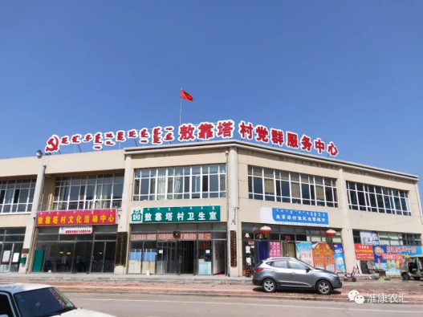

敖靠塔村位于准格尔旗经济开发区的北进出口处，纳榆线横贯全村，以纳林河为轴对称分布，川东5个社，川西5个社，总占地面积73平方公里，耕地总面积5730亩，其中水浇地551.7亩，实施退耕还林工程6254.3亩，荒山造林6655亩，牲畜总头数5437头（只），全村总户数941户,总人口2126人(其中少数民族101户、196人），常住人口524户、1177人，村党支部现有党员49名，村干部5名，村务监督委员会3名，大学生村官1名。全村沿川6社土地平缓，水源条件较好。沟梁4社土地贫瘠，水资源匮乏。
村民主要是以种养殖业为主，近几年,随着市场经济发展形势大好,村民抢抓机遇,根据本地实际,依靠丰富的自然资源,川西主要以种植西瓜和养羊为主，川东主要以种植露地蔬菜、大棚蔬菜和养猪为主。2018年我村农民人均纯收入已达到12000元。